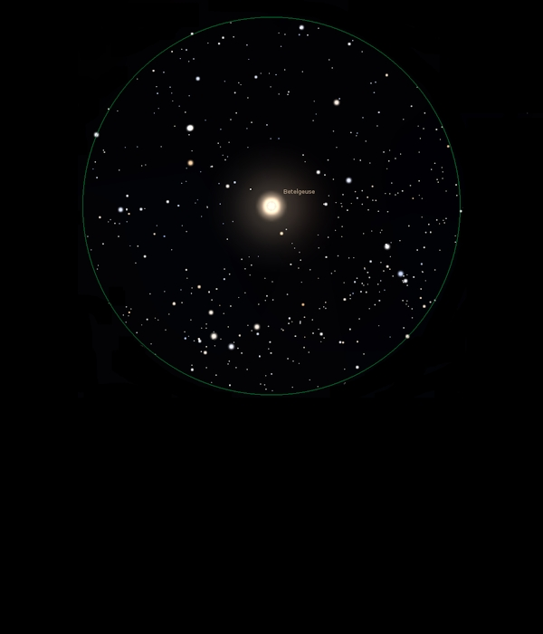

Betelgeuse

Red Supergiant Star in Orion
HIP 27989
Mag 0.45
Alpha Orionis, 58 Ori
15/01/16
An amazing colour, I see it as very orange rather than red and very twinkly but Orion is still rather low down at 18:37